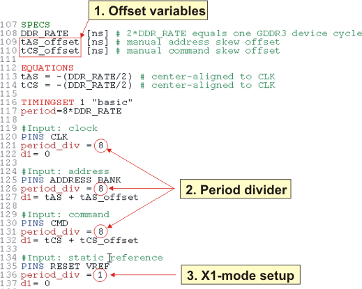
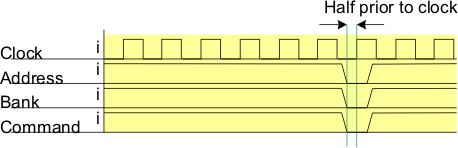

Timing setup for system clock domain
The timing setup example shown in the figure below including address, command and clock signals for the system clock domain contains:

- Offset variables for fine adjustment and to perform shmoos
- A period divider (period_div) set to 8 for X8-mode setup in "FAST" context (except the RESET and Vref signals) to achieve high-speed signals
- An x1 mode setup in "FAST" context for RESET and VREF
The waveform equation for a burst length 8 including x1 and x8 modes is shown in this example:
119 PINS RESET VREF 120 00 "0" 121 01 "1" 122 brk "1" 123 124 PINS CLK 125 00 "01010101" 126 01 "10101010" 127 brk "11111111" 128 129 PINS ADDRESS BANK 130 00 "00000000" 131 01 "10000000" 132 02 "01111111" 133 03 "11111111" 134 brk "11111111"
If you set the ADDRESS and COMMAND signals center aligned to the clock signal the address domain timing is center aligned half prior to the clock (see following figure).
